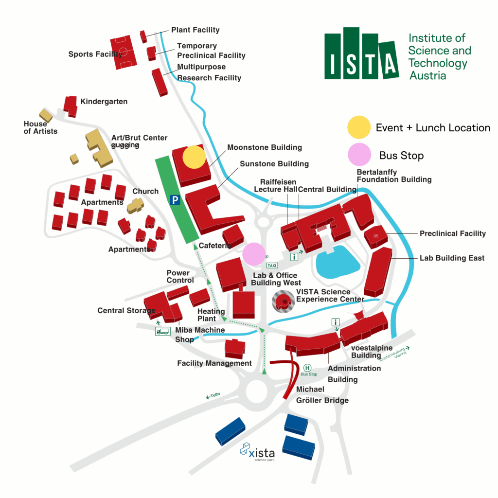

June 8 – June 12, 2026, ISTA (Vienna), Austria
Program Location near Vienna Daily shuttle to ISTA Hike and workshop dinner Hotels near shuttle stops Organizers
The sixth edition of the Iris workshop will be held at ISTA in Vienna, Austria. It will be focused on Iris-related research, so as to allow for in-depth talks and discussions. The three-day-long program, with talks, extends from Monday, June 8 until Wednesday, June 10. Participants are encouraged to stay for one or two more days, on June 11 and June 12, for further informal discussions and interaction.
There will be lunch provided at the workshop. On Tuesday, there will be a hike followed by the workshop dinner at Rondell Café am Cobenzl.
Please register for the workshop via this website.
Registration costs 100 EUR and includes lunches, snacks, coffee, the workshop dinner, and the shuttle bus to and from ISTA.
The registration closes on May 8May 22. If you have questions about the registration, please contact the organizers.
If you wish to attend, we suggest registering now and booking accommodation as soon as possible, as Vienna in June can be very busy.

The workshop will be held on the campus of Institute of Science and Technology Austria (ISTA), located in Klosterneuburg, Austria. Klosterneuburg is a historical town in Lower Austria, 20 minutes from Vienna. More information about the city and visitor information, can be found on the official website of the town.
The conference will take place in the Moonstone Building in the Seminar Center.
The workshop takes place in the Moonstone Building on the ISTA campus in Klosterneuburg, just outside Vienna. We recommend staying in Vienna and using the free daily shuttle bus to reach the ISTA campus in the morning and return to Vienna in the evening.
Shuttle bus (free of charge)
Public transportation (Klosterneuburg)
You can also reach Klosterneuburg by public transport, in particular by bus 400, bus 142 and train S40. Use the VOR route planner to find connections. Tickets bought directly on the bus require cash. The bus 142 is free of charge for workshop participants. Buses and trains from Vienna to Klosterneuburg run until around midnight.
Further information on reaching ISTA.
On Tuesday afternoon, there will be the workshop hike followed by the workshop dinner. There will be a bus leaving from ISTA after last talk on Tuesday to the start of the hike. The bus will drop us off at the starting point of the hike at Häuserl am Roan. Here is a description of the hike (in the reverse direction). Please make sure to bring some kind of rain gear since there might be (hopefully light) rain. The hike ends at Rondell Café am Cobenzl, where we will have the workshop dinner. There is no fixed shuttle bus back after the dinner, but there is the direct public bus 38A from the dinner (station Wien Cobenzl Parkplatz) to Heiligenstadt. See here for an example of a connection from the dinner to Heiligenstadt. The 38A bus runs every 30 min until 23:00. From Heiligenstadt, you can use the U4 subway to reach Schwedenplatz or the S40 train or 400 bus to reach Klosterneuburg. There is the 43A bus from the start of the hike to the dinner along the Höhenstraße.
If you don't want to participate in the hike, but want to attend the dinner, you can directly reach Rondell Café am Cobenzl via public transport by first going to Heiligenstadt (see above) and then take the 38A bus to Wien Cobenzl Parkplatz. You can stay at the Moonstone seminar center at ISTA before leaving for the workshop dinner. If you do this, we recommend this public transport connection to reach the workshop dinner. (Note that no ticket is required to the 142 bus / ISTA SHUTTLE, but you will need a ticket for the 38A bus, which can be bought on the bus with cash.)
Please aim to be at Rondell Café am Cobenzl at 17:45 for the workshop dinner.
We recommend staying near one of the conference shuttle stops: Schwedenplatz in Vienna, Heiligenstadt in Vienna, or Stadtplatz in Klosterneuburg. Vienna is usually the most convenient option because it has more hotels, restaurants, and evening options. The hotels below are within walking distance of one of the shuttle stops.
Vienna:
Klosterneuburg:
Hotel map: if the embedded map does not work, you can view it directly in Google Maps.